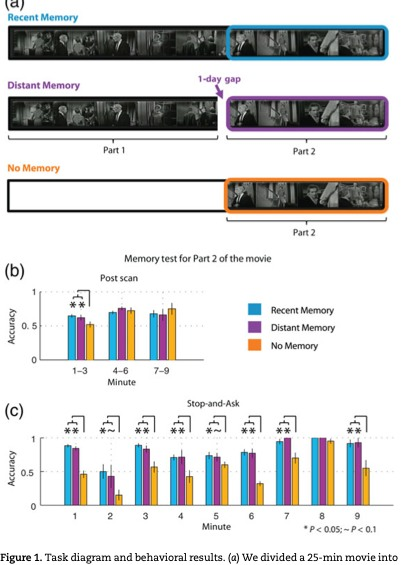
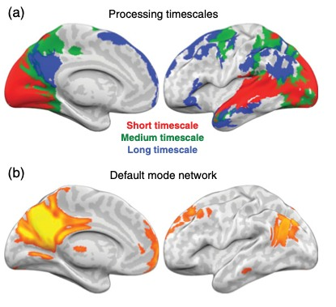
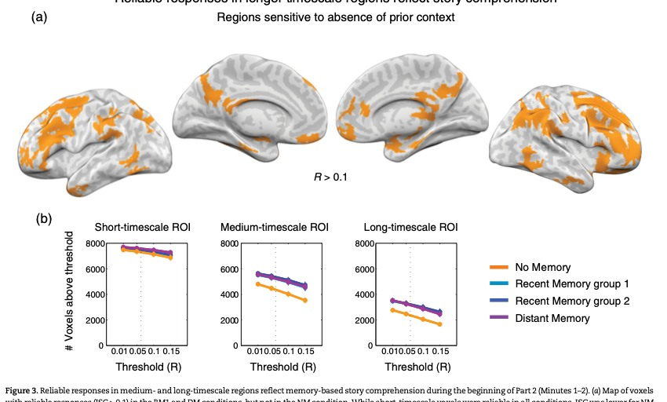
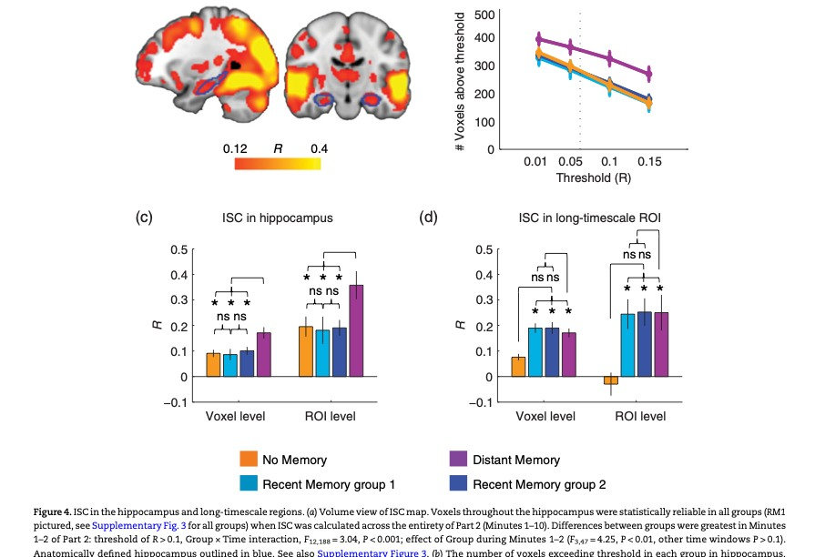
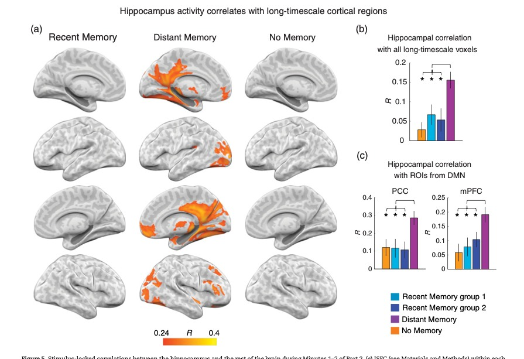
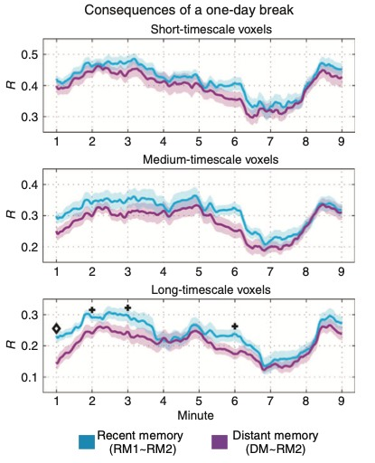
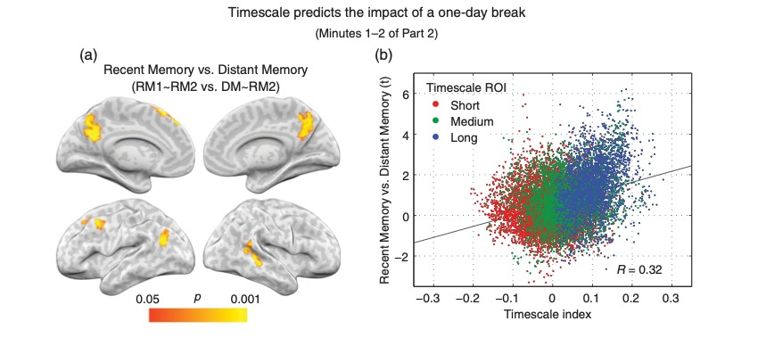

相同剧情可以唤起两种可靠的记忆动态
作者J. Chen · C. J. Honey · E. Simony · M. J. Arcaro · K. A. Norman · U. Hasson
出处Cerebral Cortex, 2016, 26(8):3428–3441 · DOI
阅读版本2015-08-03 Advance Access，14 页；下文页码对应这一版本，正式引用年份为 2016
代码与附件正文称使用 in-house MATLAB；未找到本文独立官方代码仓库。外置 Supplementary Material 未取得，相关补充结论按正文转述标注
核心洞见当前输入相同、理解表现相近时，前文是连续经历还是隔日提取，仍会改变海马与长时间尺度皮层的共同反应。
读者ISC 新手；计算式为正文定义的清晰重写，数值例子与互动均为教学示意。
1. 持续理解需要过去，过去的取得方式可以改变
一个人走进房间，看到父亲命令仆人离开。如果先前剧情告诉你这些仆人其实是机器人，这个场景的意义就不同。现在画面里的像素完全可以相同，理解它所用的历史却可能来自两条路径：刚刚连续看过，或昨天看过、今天重新想起。
这篇论文的出发点是长时间尺度皮层。所谓 long processing timescale，并不只是 BOLD 曲线变化慢，而是当前反应受较长历史影响。作者想知道：连续叙事中的信息能否在皮层处理过程中维持数分钟；当相同信息需要从一天前找回时，海马与皮层的共同动态是否改变。【文中有据：Introduction，p.1–2】
【推断】将当前刺激固定，是这个设计最有力的判断。若两组看不同的影片片段，差异既可能来自记忆，也可能来自声音、人物或场景变化。本文让所有组都看同一个 Part 2，把组间差异更多地指向先前经历和间隔所造成的处理差异。间隔同时改变了连续性、情境和时间距离，因此这些因素并未彼此完全分离。
2. 三组观看同一个十分钟结尾

影片是 The Twilight Zone: The Lateness of the Hour，总长 25 分钟。前 15 分钟是 Part 1，后 10 分钟是 Part 2，分界落在场景切换。设计上，Part 2 初期的人物动机依赖 Part 1；例如机器人身份直到 Part 2 的第 5 分钟才再次明确说明。【文中有据：Methods，p.2】
| 组别 | Part 1 | Part 2 | 有效 fMRI 人数 |
|---|---|---|---|
| RM：Recent Memory | 刚刚看过 | 连续观看，无中断 | 24，分为 RM1/RM2 各 12 人 |
| DM：Distant Memory | 前一天看过 | 隔日进入扫描仪观看 | 14 |
| NM：No Memory | 从未看过 | 直接观看 Part 2 | 13 |
最初招募 60 人，排除 9 人：3 人头动超过 3 mm，2 人睡着，2 人信号质量问题，2 人扫描不适。最终 51 人。RM 随机分半提供相同条件下的独立参照；它是同一研究内部的复核，不是重新招募的一项独立重复实验。
事后问卷与在线理解回答两个不同问题
扫描后问卷含 25 道具体事件自由回答题，另有 6 道一般问题，其中 13 道具体事件题对应 Part 2。RM 与 DM 未见显著差异，NM 在前 1–3 分钟相关题目上表现较低。这个测量的困难是：观众可能在影片后面才懂了前面的情节，再倒回去答对早期问题。
因此作者另外招募 29 人做 stop-and-ask：RM 12、DM 7、NM 10 人，在 Part 2 中多次暂停，回答接下来会发生什么。49 题包括 4 个注意 catch trials，平均每分钟约 4.7 次。NM 的在线理解差异延续到整个 Part 2；RM 与 DM 每分钟都未见显著差异。两项行为实验的时间结构不同，扫描中受试者并没有被这些问题打断。【文中有据：p.3、5–6，图1】
【教学预演】如果只用事后问卷，可能误判 NM 到后半程已经具有与其他组相同的在线理解。最直接的诊断是独立样本的即时理解测量。暂停问答改善了时间定位，却破坏了连续观看，所以不能把它的神经过程当作扫描实验过程；它提供的是行为层面的补充证据。
3. 组内 ISC 测可靠性，组间 ISC 测相似性
固定脑区中的一个体素 $v$ 和一个时间窗 $W$。$x_{g,i,v}\in\mathbb R^{T_W}$ 是组 $g$ 的第 $i$ 人在该窗内的 BOLD 曲线，$N_g$ 是组人数。先定义 Pearson 运算：
它比较中心化后的形状，因此两个组的均值振幅不同不一定改变相关。本文的组内 ISC 用一个人对其他人的平均，称为 reliability：
平均参考不含本人，防止自我相关。组间 ISC 则以另一个组的平均为参照：
$g\to h$ 在这里表示谁对哪个组的平均相关，不表示神经因果方向。两组大小、信号质量不同，交换参考方向时结果也不必完全相等。正文方法使用原始相关的算术平均；不能在重述历史结果时擅自说作者用了 Fisher 平均。若今天重新分析，可以事先指定 Fisher 或中位数汇总，并检验结论稳健性。【文中有据：p.3】
两条都可靠、彼此却不相同的曲线
【教学示例】取 RM 的共享曲线 $c=(1,-1,1,-1)$，DM 的共享曲线 $d=(1,1,-1,-1)$。每组内每个人都等于该组曲线时，组内 ISC 都为 1；但跨组内积 $c^{\mathsf T}d=0$，所以组间 ISC 为 0。这不是哪个组没有响应，而是两组一致地响应成不同形状。论文最重要的结果就利用了这种区分。
拖动两种共享模式的夹角 $\theta$。每组内部仍可保持完全可靠，组间相关却随 $\cos\theta$ 改变。这是理想化的向量例子，不是原始脑数据。
曲线由两条正交的零均值基向量构造。组内复制仍是 1；改变的是两个共享响应之间的关系。
4. 独立 localizer 定义对历史结构的敏感性

若从主实验中挑出 RM/DM 差异最大的体素，再声称这些体素特别对时间历史敏感，选择过程就已经用了目标结果。作者采用另一个刺激和独立被试的 timescale localizer：将 325 s 的 Dog Day Afternoon 片段完整播放、按 7.1–22.3 s 粗片段打乱、或按 0.5–1.6 s 细片段打乱。
逻辑是：即使细切后仍能同步的区域，可由较短尺度的输入驱动；完整和粗切能同步、细切不行的区域，需要中尺度结构；只有完整影片能同步的区域，更依赖长历史。图 2 显示 long-timescale 区域与 DMN 有较广重叠。它们并非由定义保证完全相同；DMN 的 PCC 连接图在这里用于展示，不直接进入其他分析。【文中有据：p.4、6】
Timescale index（TI）是标量差值，不带秒的单位。较大的 TI 表示完整叙事相对粗打乱更能维持共享反应；它不是从单体素直接读出的记忆寿命。原图 7 用这个连续指标避免完全依赖 short/medium/long 的离散分箱。
5. 图 3 将前文经验与皮层响应可靠性联系起来

在 Part 2 开始的两分钟，NM 在 medium/long-timescale 区域具有较低组内 ISC，RM1、RM2 与 DM 都比较可靠；short-timescale 区域没有相同的组×时间交互。图 3A 画出 RM1 和 DM 可靠、NM 不可靠的体素，图 3B 在多个相关阈值下数体素，检查结果是否只由一个阈值造成。【文中有据：p.6–8】
长时间尺度 ROI 的 Group×Time 交互为 $F_{12,188}=2.60,p\lt0.005$；初始两分钟 NM 低于其他组。这里的 $F$ 比较组间或交互解释的均方与误差均方，两个下标是相应自由度。它表明差异的时间模式与条件有关，单靠这个统计量不提供一个精确的神经记忆时间常数。
需要同时注意：显著体素数既受效应大小影响，也受噪声、空间相关和阈值影响。图 3 在多个阈值下复查是有用的证据；它仍不把体素数转化为参与者数。由于行为 NM 较差而感官输入相同，这个空间模式支持历史知识与高阶共同处理有关。
6. 图 4 将海马与长时间尺度皮层分开

海马在所有组的整段十分钟里都能出现可靠反应。本文的对比并不是海马只有 DM 才工作，而是在初始两分钟，DM 的海马 ISC 高于其他组。同时，长时间尺度皮层的可靠性在 RM 和 DM 都较高，NM 较低。两种 ROI 的组别模式不同，Group×ROI 交互为 $F_{3,47}=6.18,p\lt0.005$。【文中有据：p.7–9，图4】
图 4 同时给 voxel-level 和 ROI-level 两种计算：前者先在每个体素计算 ISC，再跨体素平均；后者先把 ROI 内体素时间序列平均，再做跨被试相关。这两个次序一般不等价：
原因在于相关的分母包含每条曲线自己的方差，而 ROI 平均还包含体素间协方差。论文两种方式给出相同定性模式，使结果不完全依赖某一种汇总顺序。海马 voxel-level 主效应为 $F_{3,47}=4.77,p\lt0.01$，ROI-level 为 $F_{3,47}=3.54,p\lt0.05$。图注最后一处 post hoc 文句写 NM，而相邻正文和主张说 DM 高于其他组；阅读时应对照正文和图形，复现时再核实原始检验。
更高 ISC 表示不同 DM 被试的海马波动更一致，不等于海马平均激活幅度更大，也不等于检索次数被直接计数。作者将它解释为对隔日情节信息的共同提取需求，这与设计相符，但该心理过程没有被单次相关直接读出。
7. 图 5 的海马–皮层关系是跨被试 ISFC

令 $h_{g,i}\in\mathbb R^{T_W}$ 为第 $i$ 人海马 ROI 平均时间序列，$x_{g,j,v}$ 为同组第 $j$ 人皮层体素 $v$ 的曲线。本文的海马种子 ISFC 为：
它把 A 的海马与其他人的皮层平均相互相关，之后再对目标人平均。被试自己的皮层不进入参照，目的是削弱单个人内部共享的生理噪声。海马和皮层处于不同人的脑中，并不存在由这个公式测到的解剖传递；共同刺激使他们具有可对应的反应。
在初始两分钟，DM 的海马 ISFC 在后扣带、压后和内侧前额叶等区域较明显。海马与 long-timescale 区域平均 ISFC 的组主效应为 $F_{3,47}=5.63,p\lt0.005$。从外部 atlas 定义的 PCC 和 mPFC ROI 也呈现 DM 高于其他组的模式，减少了完全依赖本研究 timescale 掩码的可能。【文中有据：p.8–9】
相位随机化保持频谱，最大值控制全脑搜索
本文先对非海马曲线作 Fourier 变换，随机化相位，再逆变换，保持功率谱但破坏原时间对应。每次都按照原方法重算海马 ISFC，并取所有皮层体素中的最大相关。1000 次随机化产生最大值零分布，取其上 5% 对应的阈值，控制 FWER。它控制的是整张图在零假设下出现一次错误发现的概率，而非每个体素都直接用未校正 0.05。
【教学示例】若每次全脑最大假相关的第 95 百分位是 0.25，一个真实体素的 0.20 可能高于其自己的零分布，却没有通过全脑最大值阈值。图 5 中各组阈值约 0.24–0.26。RM 没有体素通过这个阈值，并不表示 RM 海马–皮层不存在任何关系；正文在更宽松阈值下也描述了较弱关系。
【教学预演】如果想据此断言 DM 的海马到皮层传递更强，先把分析语言改成实际可观测量：刺激锁定、跨人共享的海马–皮层协变。然后检查是否共同受到某些剧情事件驱动，是否由海马信噪比差异带动，以及单人内部 FC 是否呈相同模式。方向性和海马必要性都需要这项相关分析之外的证据。
8. 图 6 追踪可靠轨迹之间的趋同

RM 与 DM 在 long-timescale 区域都可靠，接下来才问两者是否相同。以 RM2 为固定参照，比较 RM1∼RM2 和 DM∼RM2。前者估计同一观看条件下、独立人群能够达到的相似程度；它是带采样噪声的经验参照，不是数学上的最大可能值。
$\Delta\gt0$ 表示 DM 比另一个 RM 半组更偏离 RM2。随后在 ROI 内平均。图 6 在长时间尺度区域初期出现这个差距，之后逐渐缩小；short/medium-timescale 区域没有同样显著的组间差异。换另一 RM 半组作参考的结果由正文引向补图 5，本稿未取得该补图，不能独立审查其细节。
窗口结束于三分钟，不等于逐秒证明到三分钟
相关窗口为 120 s，即 80 TR，图上画在窗口中心；显著性在每隔 60 s 的窗口上测试。窗口 $[0,120]$ 画在 60 s，$[60,180]$ 画在 120 s。正文报告 long-timescale 差异在结束于 180 s 的窗口仍通过 $q\lt0.05$；结束于 240 s 的窗口为 $q\lt0.1$。因此这是一项按窗口定义的分钟级持续效应，无法定位一个恰好 180 s 的记忆截止时刻。【文中有据：Methods p.5，Results p.9】
拖动窗口宽度，观察同一组模拟数据产生的相关曲线如何变化。两组在早期具有不同共享成分，后期逐渐相同；图中结果完全由示意数据算出，没有复现原文曲线。
每一个点都总结整个窗口内的形状关系。改变窗口会改变估计的时间平滑程度和有效样本数。
本文用 10,000 次标签重排检验两类 ISC 的差值，并对时间窗控制 FDR。相关窗彼此重叠，因此点之间不是独立观测。若今天重新实现，还应使置换保留被试及共享参照的依赖结构，明确是在重算原始时间序列的参照，还是在重排已有相关值；两者并不总是同一种检验。
9. 图 7 将组间差异放回处理时间尺度

图 7A 显示初始两分钟最受一天间隔影响的区域，包括后内侧皮层和角回。图 7B 把每个体素的 TI 与 RM/DM 不相似程度联系起来。纵轴是比较两组相似度所用的 $t$ 统计量，横轴是完整与粗打乱 ISC 的差值。作者报告相关为 $r=0.32,p\lt0.0001$。【文中有据：p.10】
这个结果说明，依赖长历史的区域也更容易受观看中断影响。它既不是 $32\%$ 的区域受影响，也不是 $32\%$ 的方差被解释；在线性一元关系的读法中，$r^2\approx0.102$。而空间上相邻体素并不独立，因此不能将大量体素带来的小 p 值直接理解成同等数量独立样本的强度。
独立 localizer 是这里的重要设计优势：TI 并不是从 RM/DM 差异本身定义出来。即使如此，TI 仍可能同时反映神经尺度、刺激统计及测量可靠性，需要结合空间分布、控制条件和重复数据作解释。
10. 早期海马共同动态与后期皮层对齐
正文还报告 DM 个体之间，较高的早期海马–皮层 ISFC 与较高的后期皮层 RM 相似度相关：RM1 参照 $r=0.63$，RM2 参照 $r=0.60$，均 $p\lt0.05$。分析对应 Supplementary Figure 7。本稿根据正文讲解其逻辑，没有取得补图与控制分析原文。【文中有据：p.10】
现在相关跨的是DM 被试，不是时间。每个人先得到两个标量，再比较这些标量的关系。这个轴的变化很容易被忽略。它与记忆提取后逐渐重建皮层情境的解释相容，但共同的个体信噪比或理解能力也可能影响两个量，先后测量本身没有建立因果链。
11. 分钟级上下文维持是有方向的机制解释
| 证据层级 | 这篇文章支持的内容 |
|---|---|
| 直接测量 | 相同 Part 2 下，组内 ISC、海马 ISFC、组间 ISC 的条件差异及时间窗变化 |
| 行为关联 | 缺少 Part 1 降低理解；RM/DM 的行为未见显著差异 |
| 作者解释 | DM 更依赖海马检索以重建 situation model；连续观看可保留部分近期情境 |
| 尚需额外证据 | RM 中海马不是必要的；皮层某种生物物理机制独立保存信息；海马先驱动皮层的因果方向 |
作者并未在本实验中研究海马损伤患者，也没有刺激或抑制海马。关于失忆症的研究构成理论动机，但不能代替本实验的干预。因此最有依据的表述是：在连续与隔日经历之间，记忆相关的共享神经动态不同；观察结果支持连续叙事下长时间尺度皮层维持上下文的解释。
【推断】若要分开时间距离与情境中断，可设计同一批材料的连续、短暂停顿、短时干扰、隔日四种条件，同时记录即时理解与海马–皮层指标。这个后续建议来自设计逻辑，不是作者已经完成的实验。若希望验证眼动提前或事件边界，需另行定义 gaze、边界和时间先后指标；本文眼动摄像头主要用于监测清醒状态，并未提供这类核心结果。
12. 原始采样与预处理影响分钟级结论的读法
扫描 TR 为 1.5 s，TE 28 ms，原始体素为 $3\times3\times4\ \mathrm{mm}^3$，再采样到 3 mm 各向同性。处理包括 slice timing、运动校正、线性去趋势、140 s 高通和 MNI 配准。140 s 截止是时间滤波设定，不代表神经系统只能保留 140 s 信息；这里的长尺度指当前处理对刺激历史的依赖。
从研究实践看，复现的最小闭环是：恢复分组和有效样本，锁定同一 Part 2 时间轴，用独立 timescale ROI，分别重算组内可靠性、海马 ISFC 与组间相似性，再对窗口、ROI 汇总及参照人数作敏感性分析。本文真正可带走的思路，是用同一当前输入下的不同历史，把反应可靠和反应相同分成两个可检验的主张。